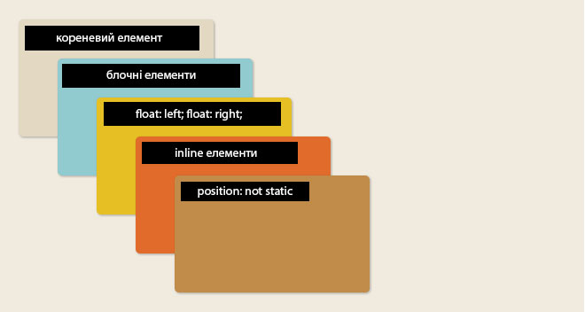

!!!child-елементи елемента-батька(з контекстом накладення) живуть у свому ізольованому просторі
!!!child-елементи не можуть бути нижче елемента-батька(з контекстом накладення)
opacity<0 Просто вважайте його рівнозначним z-index:0;
opacity<0 --- створює контекст накладення!!!
Новий контекст створюється для наступних елементів:
<body> (<html>)
елементи з z-index не “auto” і position іншим ніж “static”; fixed(створює контекст навіть без z-index)
елементи з opacity<1
Flex- та Grid-елементів зі значенням z-index не “auto”. Навіть якщо він “static”.
елементи з властивістю transform не “none”
елементи з властивістю “will-change”, filter, transform-style зі значенням preserve-3d; perspective зі значенням не “none”, CSS Regions: встановлене значения flow-from не“none”, для елемента з content не "normal".
Стандартне накладання елементів в HTML

Стандартне накладання елементів в HTML +z-index-овані елементи